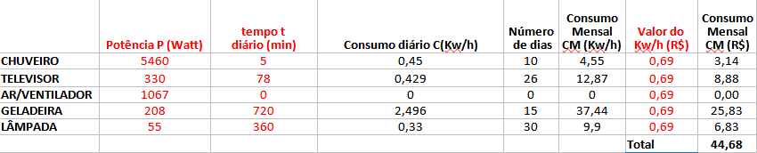
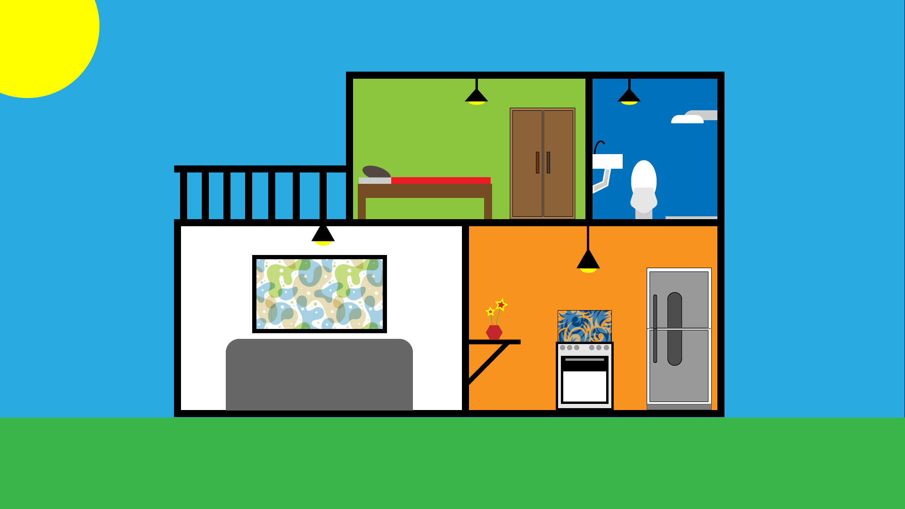

Planilha
Texto descritivo
No quadro acima, os equipamentos citados são o chuveiro, televisor, geladeira e a lâmpada, cada um com sua potência e tempo de uso. O chuveiro com 5460W usado 5 minutos por um período de 10 dias; o televisor, com 330W, com uso uso de 78 minutos por um período de 26 dias; com a geladeira temos 208W com uso de 720 minutos por um período de 15 dias; e a lâmpada , com 55W com uso de 360 minutos por um período de 30 dias.
Esses dados são do uso de uma pessoa por um perído de um mês (30 dias). O valor do KW/h é R$: 0,69; e o chuveiro gasta 0,45 KW/h; o televisor 0,429 KW/h; a geladeira 2,50 KW/h; e a lâmpada, 0,33 KW/h diários. Temos o consumodo chuveiro em 4,55 KW/h, do televisor em 12,87 KW/h, da geladeira em 37,44 KW/h e da lâmpada em 9,90 KW/h. Logo o valor a pagar deles são respectivamente: R$: 3,14; R$: 8,88; R$: 25,83 e R$: 6,83, com um gasto total de R$: 44,67.
Representação da casa
